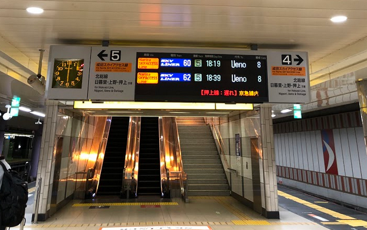
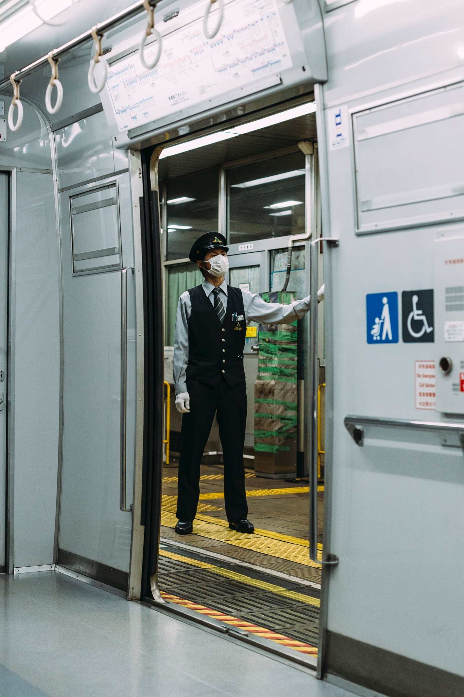
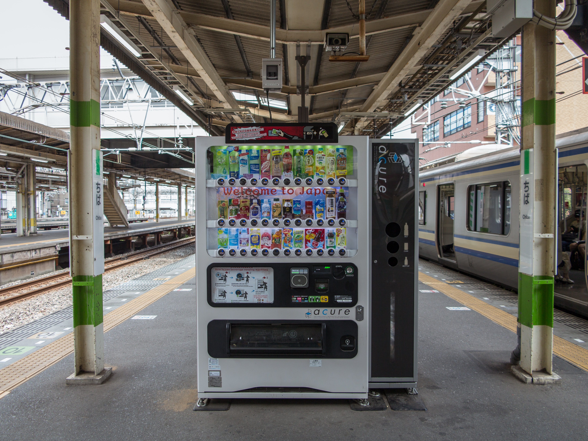
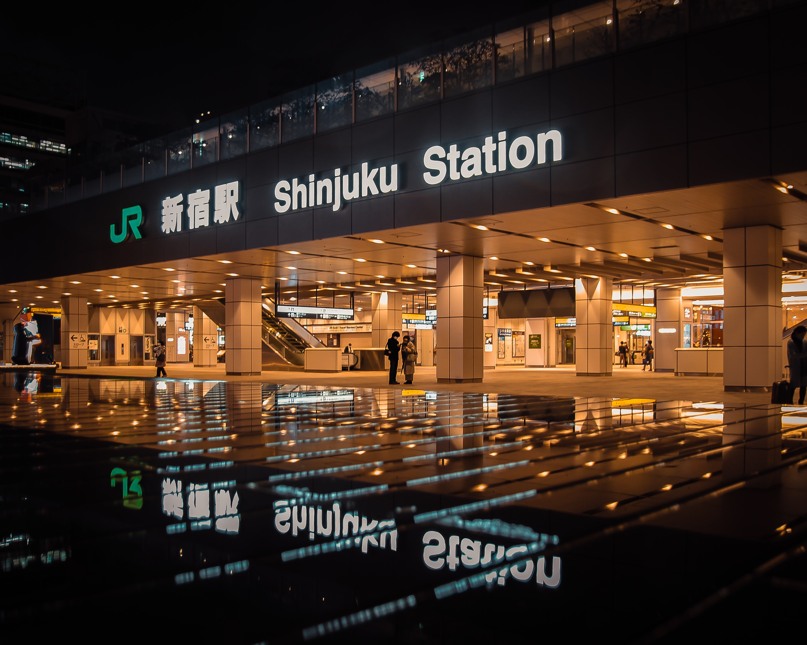
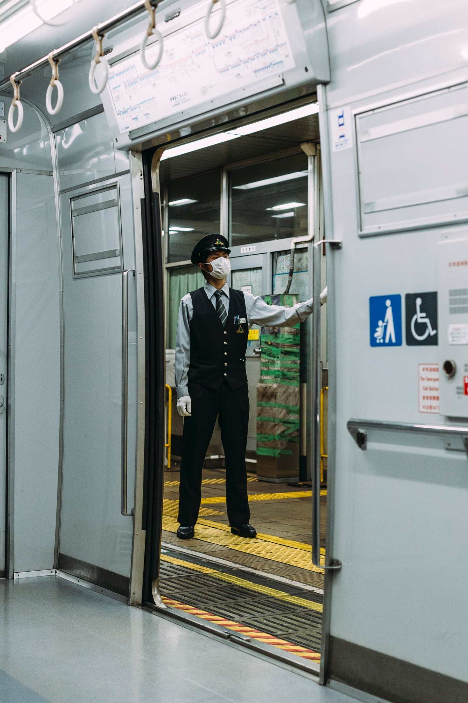
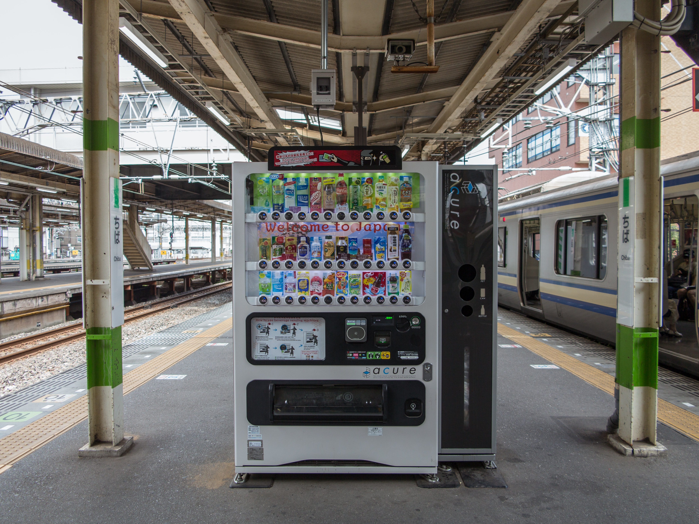
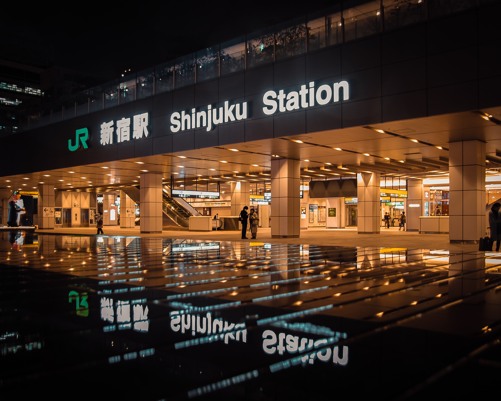

Transportation - Local Trains
Among the multitude of Japan Railways (JR) owned train lines, the most important for travel within
the Kanto and Kansai regions are JR East and JR West, respectively. However, private-owned lines such as the
Seibu and Keio lines in Tokyo or the Nankai and Keihan lines in Osaka may need to
be used as well to get to certain areas. Stations can be found in buildings with the "JR" symbol.
There are four different types of local train categories based on their stop frequency:
Due to this categorization system, it is important to note the train's current operation type before boarding it to prevent
missing your stop or taking a longer trip than originally planned. The type of operation can be found on the timetable
board inside the train station and on the train itself, and will typically have English translations included as well.
To be 100% sure, listen for the train arrival announcements on the platform as well.

To get to your train, simply follow the signs located throughout the station. Signage will be available on the platform
as well in multiple languages including English and Korean. If you do need help, do not hesitate to speak to a station
attendant, who will be more than happy to help you get to your destination.
Trains in Japan have unique melodies, known as "Hassha Melodies", that play on the trains at each stop.
The melodies are simple jingles that notify passengers of which station they have arrived at.
Food is also available inside many stations, which generally have vending machines available; however, larger stations
usually offer restaurants, dessert stands, and other places to dine as well.
One final thing to keep in mind is that trains in Japan offer "women only" cars. As the name indicates, these cars are only for women and
created to prevent sexual harassment incidents and provide women with a safe space while traveling. When boarding a train, be sure to
check for signs on the train and platform that indicate whether or not it is a women only car.
 




